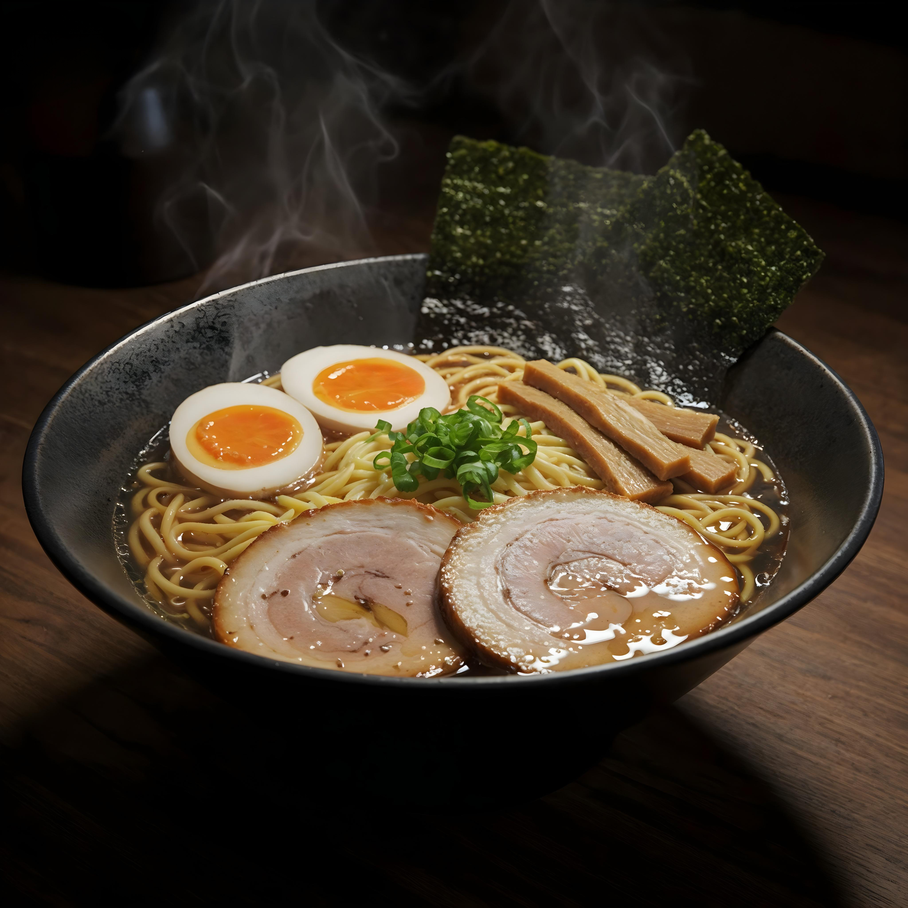

Home
Ramen Recipe

Broth Ramen
Broth ramen is a type of ramen that focuses on the rich and flavorful broth. The broth is typically made by simmering bones, meat, and vegetables for several hours to extract maximum flavor. Common ingredients include pork bones, chicken bones, and various aromatics like garlic, ginger, and onions. The result is a hearty and comforting bowl of ramen that is perfect for cold days.
Ingredients:
- 4 cups chicken broth
- 2 cups pork broth
- 1 tablespoon soy sauce
- 1 tablespoon miso paste
- 2 cloves garlic, minced
- 1 inch ginger, sliced
- 2 green onions, chopped
- 200g ramen noodles
- Toppings: sliced pork, soft-boiled egg, nori, bamboo shoots
Instructions:
- In a large pot, combine chicken broth, pork broth, soy sauce, miso paste, garlic, ginger, and green onions. Bring to a boil, then reduce heat and let it simmer for at least 1 hour to allow the flavors to meld together.
- While the broth is simmering, cook the ramen noodles according to the package instructions. Drain and set aside.
- Once the broth is ready, strain it to remove the solids and return the liquid to the pot. Keep it warm over low heat.
- To serve, divide the cooked noodles into bowls and ladle the hot broth over them. Add your desired toppings such as sliced pork, soft-boiled egg, nori, and bamboo shoots. Enjoy your delicious bowl of ramen!